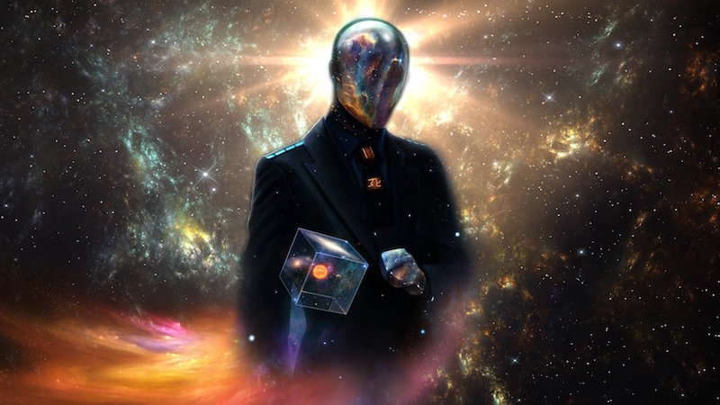
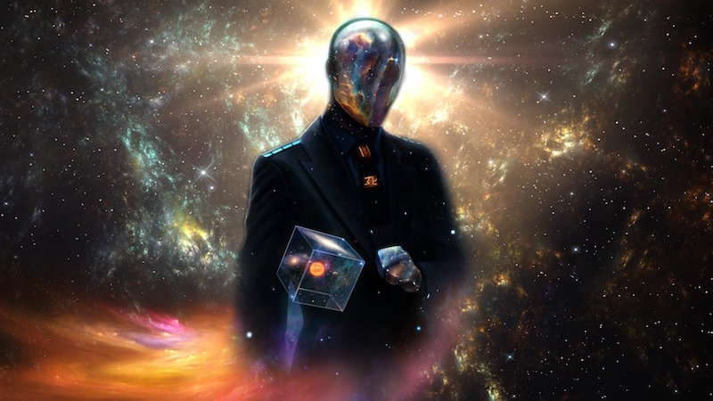

Visual Technology
by Devon ZuegelTechnology enables us to see the world in ways inaccessible to our natural senses. In opening these new worlds to us, it encourages introspection and discovery, inflates our cosmic egos, and then puts us back in our place.


Discovery of perspective
Visual technology plays a key role in human cognition and our sense of self. One primitive example is the mirror, which literally enables self reflection. Mirrors are so deeply ingrained in our conscious that they are part of its definition. The mirror test –– the ability to recognize one's own reflection –– is a common method for determining whether an animal possesses self awareness, cognition, and social identity.
The mirror is a simple reminder that our understanding of reality is incomplete and subjective. This simple device trains us to step outside of our usual place to see ourselves from a different perspective. Lewis Mumford argued that the introduction of high quality mirrors played a major role in the rise of self-examining work in the Renaissance. He credited newly-enabled "mirror conversations" for Rembrandt's self portraits, the expanding genres of confessional novels and autobiographical writing, and a general preoccupation with one's image.
Mirrors advanced our understanding of the natural world as well as of ourselves. The first Renaissance perspective drawings relied on the use of a mirror, a technique discovered by 15th century Italian artist Filippo Brunelleschi. Filarete, one of his contemporaries, described the benefits of this tool:
"If you should desire to represent something in another, easier way, take a mirror and hold it up in front of the thing you want to do. Look into it, and you will see the outlines of the thing more easily, and whatever is closer or further will appear foreshortened to you."
Inspired by Brunelleschi's mirror, Alberti further embraced the rules of geometry with his gridded window. Linear perspective had been an obscure branch of theoretical mathematics, but with Alberti's invention, it quickly became an important tool in realist art.

It also played a key role in the then-emerging modern science. For hundreds of years, medieval astronomers had been puzzled by the light and dark patches on the moon, unable to even identify them as topography. Just a generation later, Galileo used the rules of perspective to accurately estimate the depth of these mountains and craters.

Creation and a god complex
Cameras are a spiritual descendant of these earlier optical inventions. They are yet another extension of our senses. Marta Braun explained, "Instantaneous photography of moving objects established a world that is unavailable to our vision –– a world that is beyond the reach of our senses."
In the late 1800s, Eadweard Muybridge's stop-motion photographs famously answered a hotly-debated question of the day: are all four hooves ever off the ground at the same time in a horse's gallop? The human eye cannot distinguish the blur of the gait as a series separate movements, but Muybridge's photographic studies proved definitively that all four hooves do indeed come off the ground simultaneously mid-stride.
However, photography is not simply another iteration in our understanding of reality. It is a superpower that allows us to control time. Cameras gave us the power to capture a moment –– to freeze it, share it, and study it at will. Further advancements brought us the time lapse, slow motion video, and long exposure photography, allowing us to capture the world on timescales inaccessible to our natural senses.

 

The camera is not the only technology that has extended art beyond representations of the existing world. Photoshop allows us to modify the world around us or create entirely new worlds from scratch. Artists like Dan Luvisi create entire photorealistic worlds that otherwise couldn't exist. These tools enable us to mold worlds according to our fantasies, allowing us to play god.
As we live more of our lives online and through abstract representations, the illusions we create become all the more important. Visual media are no longer just representations of some outer world; increasingly, they are our entire world. And as its creators, we have developed a growing sense of self-importance and invincibility. Technology offers the tools to both understand and engineer reality, and over time that has fueled a god complex within humans. It is a major feature of modern, post-Enlightenment thought that progress is inevitable. Science historian George Sarton argued in 1936 that "the acquisition and systematization of positive knowledge is ... cumulative", and as a result human knowledge can only expand to infinity.


A dash of cosmic perspective
The great irony is that visual media is the best way to communicate just how insignificant we really are. When the Hubble Space Telescope was pointed into the deep field, a sliver of space thought to be void of stars and planets, the resulting images were illuminated by light from over three thousand galaxies. Images from Voyager 1 gave us another perspective on our place in the universe. At a distance 6 billion kilometers from home, the spacecraft captured an image of the earth famously described by Carl Sagan as "a pale blue dot":
"Look again at that dot. That's here. That's home. That's us. On it everyone you love, everyone you know, everyone you ever heard of, every human being who ever was, lived out their lives. The aggregate of our joy and suffering, thousands of confident religions, ideologies, and economic doctrines, every hunter and forager, every hero and coward, every creator and destroyer of civilization, every king and peasant, every young couple in love, every mother and father, hopeful child, inventor and explorer, every teacher of morals, every corrupt politician, every 'superstar,' every 'supreme leader,' every saint and sinner in the history of our species lived there — on a mote of dust suspended in a sunbeam."
–– Carl Sagan
This strange dichotomy is the defining attribute of our relationship with visual representation. It gives us the tools necessary to make discoveries and empowers us to bend spacetime –– or at least our perception of it. At the same time, it is a reminder that we still have so many more mysteries to unravel. The only promise of technology is that it will help us discover and represent our understanding, not that we will be able to find all of the answers.